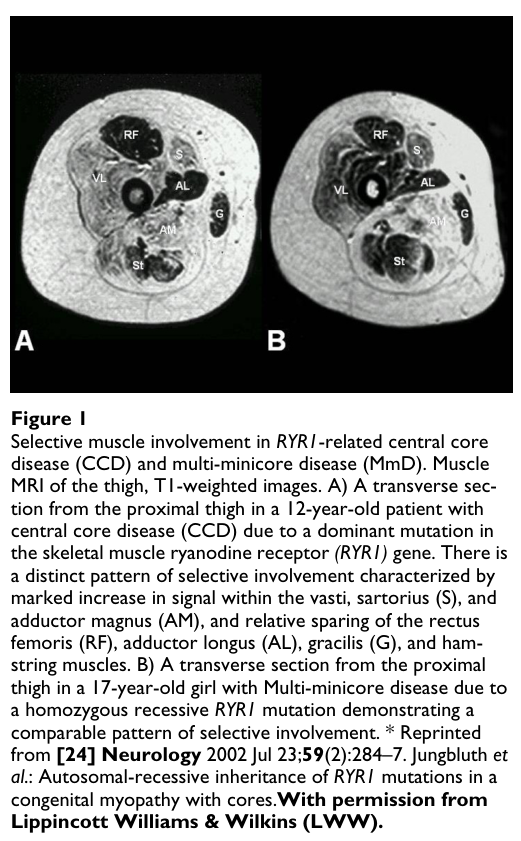

Multiminicore disease (MmD), also called multi-minicore disease, minicore myopathy, or multicore myopathy, is a genetically heterogeneous, recessively inherited congenital myopathy defined by the presence of multiple "minicores" on skeletal muscle biopsy. Minicores are multifocal, well-circumscribed areas of reduced oxidative enzyme activity that extend only a short distance along the longitudinal axis of the muscle fiber and show sarcomeric disorganization with a paucity of mitochondria on electron microscopy. The classic phenotype is characterized by a clinical triad of axial muscle weakness, spinal rigidity with early scoliosis, and respiratory impairment that is often disproportionate to limb weakness. MmD is most commonly caused by biallelic variants in SELENON (SEPN1), which underlie the classic rigid-spine / respiratory phenotype, and in RYR1, which underlie a broader phenotypic spectrum that frequently includes external ophthalmoplegia and overlaps histologically with central core disease. Rarer cases are associated with TTN and MYH7.
Ask a research question about Multiminicore Disease. OpenScientist will conduct autonomous deep research using the Disorder Mechanisms Knowledge Base and PubMed literature (typically 10-30 minutes).
Do not include personal health information in your question. Questions and results are cached in your browser's local storage.
name: Multiminicore Disease
creation_date: "2026-06-05T12:00:00Z"
category: Mendelian
description: >-
Multiminicore disease (MmD), also called multi-minicore disease, minicore
myopathy, or multicore myopathy, is a genetically heterogeneous, recessively
inherited congenital myopathy defined by the presence of multiple "minicores"
on skeletal muscle biopsy. Minicores are multifocal, well-circumscribed areas
of reduced oxidative enzyme activity that extend only a short distance along
the longitudinal axis of the muscle fiber and show sarcomeric disorganization
with a paucity of mitochondria on electron microscopy. The classic phenotype
is characterized by a clinical triad of axial muscle weakness, spinal
rigidity with early scoliosis, and respiratory impairment that is often
disproportionate to limb weakness. MmD is most commonly caused by biallelic
variants in SELENON (SEPN1), which underlie the classic rigid-spine /
respiratory phenotype, and in RYR1, which underlie a broader phenotypic
spectrum that frequently includes external ophthalmoplegia and overlaps
histologically with central core disease. Rarer cases are associated with
TTN and MYH7.
disease_term:
preferred_term: Multiminicore Disease
term:
id: MONDO:0018948
label: multiminicore myopathy
references:
- reference: PMID:17631035
title: "Multi-minicore Disease."
- reference: PMID:22009146
title: "Clinical utility gene card for: Multi-minicore disease."
has_subtypes:
- name: SELENON
display_name: SELENON (SEPN1)-related, classic MmD
description: >
The classic multiminicore phenotype caused by biallelic SELENON (SEPN1)
variants. It is the most instantly recognizable form, characterized by
early axial weakness, spinal rigidity, early-onset scoliosis and severe
respiratory insufficiency that is disproportionate to relatively preserved
limb strength. Multi-minicores are the most common biopsy lesion. This is
the form historically equated with "rigid spine muscular dystrophy" (RSMD1).
inheritance:
- name: Autosomal recessive
inheritance_term:
preferred_term: Autosomal recessive inheritance
term:
id: HP:0000007
label: Autosomal recessive inheritance
evidence:
- reference: PMID:17631035
reference_title: "Multi-minicore Disease."
supports: SUPPORT
evidence_source: HUMAN_CLINICAL
snippet: "the most instantly recognizable classic phenotype characterized by spinal rigidity, early scoliosis and respiratory impairment is due to recessive mutations in the selenoprotein N (SEPN1) gene"
explanation: Jungbluth review defines the classic SELENON/SEPN1-related MmD subtype.
- name: RYR1
display_name: RYR1-related, ophthalmoplegic / CCD-overlap MmD
description: >
A clinically broader multiminicore form caused (most often recessively) by
RYR1 variants. It encompasses a wider range of features including external
ophthalmoplegia, distal weakness and wasting, or predominant hip-girdle
involvement resembling central core disease (CCD). There may be a
histopathologic continuum with CCD due to dominant RYR1 mutations.
Malignant hyperthermia susceptibility is an important anesthetic
consideration in RYR1-associated disease.
inheritance:
- name: Autosomal recessive
inheritance_term:
preferred_term: Autosomal recessive inheritance
term:
id: HP:0000007
label: Autosomal recessive inheritance
- name: Autosomal dominant
inheritance_term:
preferred_term: Autosomal dominant inheritance
term:
id: HP:0000006
label: Autosomal dominant inheritance
evidence:
- reference: PMID:17631035
reference_title: "Multi-minicore Disease."
supports: SUPPORT
evidence_source: HUMAN_CLINICAL
snippet: "recessive mutations in the skeletal muscle ryanodine receptor (RYR1) gene have been associated with a wider range of clinical features comprising external ophthalmoplegia, distal weakness and wasting or predominant hip girdle involvement resembling central core disease (CCD)"
explanation: Jungbluth review defines the RYR1-related MmD subtype with its broader phenotype and ophthalmoplegia.
- name: Other
display_name: Other rare genetic forms (TTN, MYH7)
description: >
A small minority of multiminicore / multicore myopathy cases are associated
with variants in other sarcomeric or contractile-apparatus genes,
principally TTN (titin) and MYH7 (beta-myosin heavy chain). These are far
less common than SELENON- and RYR1-related disease.
pathophysiology:
- name: SELENON loss of function
description: >
Biallelic SELENON (SEPN1) variants cause loss of functional selenoprotein N
(SelN), a redox-active selenoprotein resident in the endoplasmic reticulum
(ER) / sarcoplasmic reticulum (SR) membrane. SelN participates in oxidative
and calcium homeostasis and is implicated in regulation of the ryanodine
receptor. Loss of SelN is the initiating molecular lesion in the classic
rigid-spine / respiratory form of MmD.
cell_types:
- preferred_term: Skeletal muscle fiber
term:
id: CL:0000188
label: cell of skeletal muscle
- preferred_term: Skeletal muscle satellite cell
term:
id: CL:0000594
label: skeletal muscle satellite cell
biological_processes:
- preferred_term: ER calcium and redox regulation
term:
id: GO:0055074
label: calcium ion homeostasis
evidence:
- reference: PMID:22527882
reference_title: "Selenoprotein N in skeletal muscle: from diseases to function."
supports: SUPPORT
evidence_source: HUMAN_CLINICAL
snippet: "Selenoprotein N (SelN) deficiency causes several inherited neuromuscular disorders collectively termed SEPN1-related myopathies, characterized by early onset, generalized muscle atrophy, and muscle weakness affecting especially axial muscles and leading to spine rigidity, severe scoliosis, and respiratory insufficiency."
explanation: Castets review establishes SelN deficiency as the cause of the SEPN1-related myopathy spectrum including classic MmD features.
- reference: PMID:22527882
reference_title: "Selenoprotein N in skeletal muscle: from diseases to function."
supports: SUPPORT
evidence_source: OTHER
snippet: "SelN participates in oxidative and calcium homeostasis, with a potential role in the regulation of the ryanodine receptor activity"
explanation: Establishes the redox- and calcium-handling role of SelN, including ryanodine receptor regulation.
- reference: PMID:22527882
reference_title: "Selenoprotein N in skeletal muscle: from diseases to function."
supports: SUPPORT
evidence_source: MODEL_ORGANISM
snippet: "SelN is essential for muscle regeneration and satellite cell maintenance in mice and humans"
explanation: Supports involvement of satellite cells in SELENON-related muscle pathology.
downstream:
- target: ER stress and oxidative dysregulation
description: Loss of SelN dysregulates ER redox state and calcium handling, leading to ER stress and oxidative stress in muscle.
causal_link_type: DIRECT
- name: ER stress and oxidative dysregulation
description: >
SelN deficiency dysregulates ER redox state and calcium handling. SEPN1
interacts with the ER-stress-induced oxidoreductase ERO1A; both are enriched
in mitochondria-associated membranes (MAMs) and govern redox regulation of
proteins. Loss of SEPN1 produces ER stress, perturbed ER calcium, and
impaired ER-mitochondria coupling, with ERO1A overexpression observed in
patient muscle biopsies.
biological_processes:
- preferred_term: Endoplasmic reticulum unfolded protein response
term:
id: GO:0030968
label: endoplasmic reticulum unfolded protein response
- preferred_term: Response to oxidative stress
term:
id: GO:0006979
label: response to oxidative stress
evidence:
- reference: PMID:38402623
reference_title: "SEPN1-related myopathy depends on the oxidoreductase ERO1A and is druggable with the chemical chaperone TUDCA."
supports: SUPPORT
evidence_source: IN_VITRO
snippet: "Here, we identify an interaction between SEPN1 and the ER-stress-induced oxidoreductase ERO1A. SEPN1 and ERO1A, both enriched in mitochondria-associated membranes (MAMs), are involved in the redox regulation of proteins."
explanation: Germani et al. establish the SEPN1-ERO1A interaction in ER redox regulation.
- reference: PMID:38402623
reference_title: "SEPN1-related myopathy depends on the oxidoreductase ERO1A and is druggable with the chemical chaperone TUDCA."
supports: SUPPORT
evidence_source: HUMAN_CLINICAL
snippet: "muscle biopsies from patients with SEPN1-RM exhibit ERO1A overexpression"
explanation: Demonstrates ERO1A overexpression in patient muscle, linking ER stress to human disease.
downstream:
- target: Mitochondrial bioenergetic defect and muscle weakness
description: ER stress and disrupted MAM/calcium homeostasis impair mitochondrial bioenergetics, contributing to muscle weakness, especially of the diaphragm.
causal_link_type: INDIRECT_KNOWN_INTERMEDIATES
- name: Mitochondrial bioenergetic defect and muscle weakness
description: >
Impaired ER-mitochondria coupling and disrupted MAM/calcium homeostasis in
SELENON-related disease compromise mitochondrial bioenergetics in muscle.
TUDCA, which rescues the SEPN1-null phenotype, improves bioenergetics in
patient-derived primary myoblasts, supporting a bioenergetic defect as an
intermediary that converges with RYR1-related disease on the common minicore
lesion.
cell_types:
- preferred_term: Skeletal muscle fiber
term:
id: CL:0000188
label: cell of skeletal muscle
biological_processes:
- preferred_term: Mitochondrial ATP synthesis-coupled electron transport
term:
id: GO:0042775
label: mitochondrial ATP synthesis coupled electron transport
modifier: DECREASED
evidence:
- reference: PMID:38402623
reference_title: "SEPN1-related myopathy depends on the oxidoreductase ERO1A and is druggable with the chemical chaperone TUDCA."
supports: SUPPORT
evidence_source: IN_VITRO
snippet: "TUDCA-treated SEPN1-RM patient-derived primary myoblasts show improvement in bioenergetics"
explanation: Germani et al. show the ER-stress inhibitor TUDCA improves mitochondrial bioenergetics in patient-derived myoblasts, supporting a bioenergetic defect downstream of SEPN1-related ER stress.
downstream:
- target: Minicore formation and oxidative depletion
description: Bioenergetic compromise and disrupted oxidative metabolism contribute to focal loss of oxidative enzyme activity and mitochondrial paucity (minicores), converging with the RYR1-related pathway.
causal_link_type: INDIRECT_KNOWN_INTERMEDIATES
- name: RYR1 dysfunction and abnormal SR calcium release
description: >
RYR1 encodes the type 1 ryanodine receptor (RyR1), the sarcoplasmic
reticulum calcium release channel that mediates excitation-contraction
coupling in skeletal muscle. In RYR1-related MmD, RyR1 sub-conductance,
SR calcium leak, reduced RyR1 expression, loss of RyR1-calstabin1
association, and oxidative stress disrupt calcium homeostasis. This abnormal
SR calcium handling is thought to drive core/minicore formation with focal
loss of oxidative activity and mitochondrial depletion.
cell_types:
- preferred_term: Skeletal muscle fiber
term:
id: CL:0000188
label: cell of skeletal muscle
biological_processes:
- preferred_term: SR calcium ion release
term:
id: GO:0014808
label: release of sequestered calcium ion into cytosol by sarcoplasmic reticulum
modifier: DYSREGULATED
- preferred_term: Skeletal muscle contraction
term:
id: GO:0003009
label: skeletal muscle contraction
modifier: DECREASED
evidence:
- reference: PMID:38318125
reference_title: "Rycal S48168 (ARM210) for RYR1-related myopathies: a phase one, open-label, dose-escalation trial."
supports: SUPPORT
evidence_source: HUMAN_CLINICAL
snippet: "RyR1 is the sarcoplasmic reticulum (SR) calcium release channel that mediates excitation-contraction coupling in skeletal muscle. RyR1 sub-conductance, SR calcium leak, reduced RyR1 expression, and oxidative stress often contribute to RYR1-RM pathogenesis."
explanation: Todd et al. summarize the RyR1 calcium-handling defects underlying RYR1-related myopathy pathogenesis.
- reference: PMID:38318125
reference_title: "Rycal S48168 (ARM210) for RYR1-related myopathies: a phase one, open-label, dose-escalation trial."
supports: SUPPORT
evidence_source: HUMAN_CLINICAL
snippet: "Loss of RyR1-calstabin1 association, SR calcium leak, and increased RyR1 open probability were observed in 17 RYR1-RM patient skeletal muscle biopsies"
explanation: Documents SR calcium leak and altered channel regulation in RYR1-RM patient muscle.
- reference: PMID:17631035
reference_title: "Multi-minicore Disease."
supports: SUPPORT
evidence_source: HUMAN_CLINICAL
snippet: "Pathogenetic mechanisms of RYR1-related MmD are currently not well understood, but likely to involve altered excitability and/or changes in calcium homeoestasis"
explanation: Jungbluth review attributes RYR1-related MmD to altered excitability and calcium homeostasis.
downstream:
- target: Minicore formation and oxidative depletion
description: Abnormal SR calcium release produces focal areas of reduced oxidative enzyme activity and mitochondrial paucity (minicores).
causal_link_type: INDIRECT_KNOWN_INTERMEDIATES
- name: Minicore formation and oxidative depletion
description: >
The histopathologic hallmark of MmD is the minicore: multifocal,
well-circumscribed areas of reduced oxidative staining that extend only a
short distance along the longitudinal axis of the fiber and show myofibrillar
disruption and a paucity of mitochondria on electron microscopy. Both
SELENON- and RYR1-related disease converge on this lesion, which is the
common diagnostic substrate of the disease.
biological_processes:
- preferred_term: Oxidative phosphorylation
term:
id: GO:0006119
label: oxidative phosphorylation
modifier: DECREASED
evidence:
- reference: PMID:17631035
reference_title: "Multi-minicore Disease."
supports: SUPPORT
evidence_source: HUMAN_CLINICAL
snippet: "characterized by multiple cores on muscle biopsy and clinical features of a congenital myopathy"
explanation: Defines the minicore-on-biopsy hallmark that characterizes MmD as a congenital myopathy.
- reference: PMID:17365175
reference_title: "Functional effects of mutations identified in patients with multiminicore disease."
supports: SUPPORT
evidence_source: HUMAN_CLINICAL
snippet: "characterized by the presence of small cores or areas lacking oxidative enzymes, in skeletal muscle fibres"
explanation: Zorzato review describes the oxidative-enzyme-depleted minicore lesion in muscle fibers.
phenotypes:
- name: Axial muscle weakness
category: Phenotypic
description: >
Marked weakness of axial (trunk and neck) muscles is a defining feature of
classic MmD, typically disproportionate to relatively preserved limb
strength.
phenotype_term:
preferred_term: Axial muscle weakness
term:
id: HP:0003327
label: Axial muscle weakness
frequency: VERY_FREQUENT
evidence:
- reference: PMID:32796131
reference_title: "The clinical, histologic, and genotypic spectrum of SEPN1-related myopathy: A case series."
supports: SUPPORT
evidence_source: HUMAN_CLINICAL
snippet: "The clinical phenotype was marked by severe axial muscle weakness, spinal rigidity, and scoliosis"
explanation: Villar-Quiles cohort (n=132) confirms severe axial weakness as a marked feature.
- name: Spinal rigidity
category: Phenotypic
description: >
Rigidity of the spine with limitation of spinal flexion is a hallmark of the
classic SELENON-related form ("rigid spine" phenotype), typically of early
onset.
phenotype_term:
preferred_term: Spinal rigidity
term:
id: HP:0003306
label: Spinal rigidity
frequency: VERY_FREQUENT
evidence:
- reference: PMID:17631035
reference_title: "Multi-minicore Disease."
supports: SUPPORT
evidence_source: HUMAN_CLINICAL
snippet: "the most instantly recognizable classic phenotype characterized by spinal rigidity, early scoliosis and respiratory impairment"
explanation: Jungbluth review identifies spinal rigidity as a defining feature of classic MmD.
- name: Scoliosis
category: Phenotypic
description: >
Early-onset, frequently progressive scoliosis is common, often requiring
spinal stabilization surgery in adolescence. In the SEPN1 cohort it occurred
in 86.1% with a mean onset of 8.9 years.
phenotype_term:
preferred_term: Scoliosis
term:
id: HP:0002650
label: Scoliosis
clinical_course: PROGRESSIVE
frequency: VERY_FREQUENT
evidence:
- reference: PMID:32796131
reference_title: "The clinical, histologic, and genotypic spectrum of SEPN1-related myopathy: A case series."
supports: SUPPORT
evidence_source: HUMAN_CLINICAL
snippet: "spinal rigidity, and scoliosis (86.1%, from 8.9 ± 4 years)"
explanation: Villar-Quiles cohort quantifies scoliosis frequency (86.1%) supporting VERY_FREQUENT.
- name: Respiratory insufficiency
category: Phenotypic
description: >
Respiratory impairment is a major determinant of morbidity and prognosis and
is often disproportionate to limb weakness. In the SEPN1 cohort all patients
developed respiratory failure (from 10.1 years), with 81.7% requiring
ventilation while still ambulant.
phenotype_term:
preferred_term: Respiratory insufficiency
term:
id: HP:0002093
label: Respiratory insufficiency
clinical_course: PROGRESSIVE
frequency: VERY_FREQUENT
evidence:
- reference: PMID:32796131
reference_title: "The clinical, histologic, and genotypic spectrum of SEPN1-related myopathy: A case series."
supports: SUPPORT
evidence_source: HUMAN_CLINICAL
snippet: "All patients developed respiratory failure (from 10.1±6 years), 81.7% requiring ventilation while ambulant."
explanation: Villar-Quiles cohort documents universal respiratory failure, supporting VERY_FREQUENT.
- name: Nocturnal hypoventilation
category: Phenotypic
description: >
Respiratory impairment frequently manifests first as nocturnal
hypoventilation, detected by polysomnography, before overt daytime
respiratory failure. Diaphragm dysfunction is prominent across all ages.
phenotype_term:
preferred_term: Nocturnal hypoventilation
term:
id: HP:0002877
label: Nocturnal hypoventilation
evidence:
- reference: PMID:37807786
reference_title: "SELENON-Related Myopathy Across the Life Span, a Cross-Sectional Study for Preparing Trial Readiness."
supports: SUPPORT
evidence_source: HUMAN_CLINICAL
snippet: "Respiratory function, and particularly diaphragm function, was impaired in all patients, irrespective of the age."
explanation: Bouman cross-sectional study documents age-independent diaphragm/respiratory impairment underlying nocturnal hypoventilation.
- name: Hypotonia
category: Phenotypic
description: >
Generalized hypotonia is a typical early presenting feature of this
congenital myopathy, often noted in infancy.
phenotype_term:
preferred_term: Hypotonia
term:
id: HP:0001252
label: Hypotonia
evidence:
- reference: PMID:17631035
reference_title: "Multi-minicore Disease."
supports: PARTIAL
evidence_source: HUMAN_CLINICAL
snippet: "multiple cores on muscle biopsy and clinical features of a congenital myopathy"
explanation: Indirect citation. The Jungbluth review establishes MmD as a congenital myopathy; hypotonia is the characteristic early manifestation of this disease class but is not named verbatim in the cited abstract, so this evidence supports hypotonia only inferentially via the congenital-myopathy classification.
- name: External ophthalmoplegia
category: Phenotypic
subtype: RYR1
description: >
External ophthalmoplegia (ophthalmoparesis) is a characteristic feature of
the RYR1-related form of MmD and helps distinguish it from the classic
SELENON-related phenotype.
phenotype_term:
preferred_term: Ophthalmoplegia
term:
id: HP:0000602
label: Ophthalmoplegia
evidence:
- reference: PMID:17631035
reference_title: "Multi-minicore Disease."
supports: SUPPORT
evidence_source: HUMAN_CLINICAL
snippet: "recessive mutations in the skeletal muscle ryanodine receptor (RYR1) gene have been associated with a wider range of clinical features comprising external ophthalmoplegia"
explanation: Jungbluth review links external ophthalmoplegia to RYR1-related MmD.
- name: Malignant hyperthermia susceptibility
category: Phenotypic
subtype: RYR1
description: >
RYR1-related multiminicore disease carries a risk of malignant hyperthermia
susceptibility (MHS), an important anesthetic consideration. Volatile
anesthetic agents and depolarizing muscle relaxants should be avoided, and
patients and families should be counseled about this risk before any
surgical procedure.
phenotype_term:
preferred_term: Malignant hyperthermia susceptibility
term:
id: HP:0002047
label: Malignant hyperthermia
evidence:
- reference: PMID:17631035
reference_title: "Multi-minicore Disease."
supports: SUPPORT
evidence_source: HUMAN_CLINICAL
snippet: "the possibility of malignant hyperthermia susceptibility in RYR1-related forms"
explanation: Jungbluth review identifies MH susceptibility as an anesthetic risk requiring management in RYR1-related MmD.
- name: Minicores on muscle biopsy
category: Histopathologic
description: >
Multiple minicores on skeletal muscle biopsy are the defining pathologic
feature: multifocal areas of reduced oxidative enzyme activity with
sarcomeric disruption and mitochondrial paucity. Multi-minicores were the
most common lesion (59.5%) in the SEPN1 cohort.
phenotype_term:
preferred_term: Minicore myopathy
term:
id: HP:0003789
label: Minicore myopathy
frequency: VERY_FREQUENT
evidence:
- reference: PMID:32796131
reference_title: "The clinical, histologic, and genotypic spectrum of SEPN1-related myopathy: A case series."
supports: SUPPORT
evidence_source: HUMAN_CLINICAL
snippet: "Multi-minicores were the most common lesion (59.5%), often associated with mild dystrophic features and occasionally with eosinophilic inclusions."
explanation: Villar-Quiles cohort confirms multi-minicores as the predominant biopsy lesion.
- name: Reduced bone mineral density
category: Phenotypic
subtype: SELENON
description: >
Decreased bone mineral density is common in SELENON-related myopathy, with
associated fragility long-bone fractures, supporting routine bone-health
surveillance.
phenotype_term:
preferred_term: Reduced bone mineral density
term:
id: HP:0004349
label: Reduced bone mineral density
frequency: VERY_FREQUENT
evidence:
- reference: PMID:37807786
reference_title: "SELENON-Related Myopathy Across the Life Span, a Cross-Sectional Study for Preparing Trial Readiness."
supports: SUPPORT
evidence_source: HUMAN_CLINICAL
snippet: "80% of patients showed decreased bone mineral density on dual-energy X-ray absorptiometry scan and 55% of patients retrospectively experienced fragility long bone fractures"
explanation: Bouman study quantifies reduced BMD in 80% of SELENON-RM patients.
- name: Fatigue
category: Phenotypic
subtype: SELENON
description: >
Problematic fatigue, alongside pain and impaired quality of life, was a
prominent patient-reported outcome in SELENON-related myopathy.
phenotype_term:
preferred_term: Fatigue
term:
id: HP:0012378
label: Fatigue
evidence:
- reference: PMID:37807786
reference_title: "SELENON-Related Myopathy Across the Life Span, a Cross-Sectional Study for Preparing Trial Readiness."
supports: SUPPORT
evidence_source: HUMAN_CLINICAL
snippet: "Questionnaires revealed impaired quality of life, pain and problematic fatigue."
explanation: Bouman study documents problematic fatigue as a prominent patient-reported symptom.
- name: Subclinical cardiac abnormalities
category: Phenotypic
subtype: SELENON
description: >
Despite preserved left ventricular systolic ejection fraction, subclinical
cardiac dysfunction is common in SELENON-related myopathy: abnormal LV global
longitudinal strain in 43% of patients and QRS fragmentation in 80% on
electrocardiography. Routine cardiorespiratory follow-up is recommended for
all patients.
phenotype_term:
preferred_term: Abnormal EKG
term:
id: HP:0003115
label: Abnormal EKG
frequency: VERY_FREQUENT
evidence:
- reference: PMID:37807786
reference_title: "SELENON-Related Myopathy Across the Life Span, a Cross-Sectional Study for Preparing Trial Readiness."
supports: SUPPORT
evidence_source: HUMAN_CLINICAL
snippet: "abnormal left ventricular global longitudinal strain in 43% of patients and QRS fragmentation in 80%"
explanation: Bouman cross-sectional study documents subclinical cardiac dysfunction (impaired LV GLS 43%, QRS fragmentation 80%) in SELENON-RM; authors recommend routine cardiorespiratory surveillance.
genetic:
- name: SELENON
gene_term:
preferred_term: SELENON
term:
id: hgnc:15999
label: SELENON
association: Causative
subtype: SELENON
inheritance:
- name: Autosomal recessive
inheritance_term:
preferred_term: Autosomal recessive inheritance
term:
id: HP:0000007
label: Autosomal recessive inheritance
notes: >
Biallelic SELENON (SEPN1) variants cause the classic rigid-spine /
respiratory form of MmD. In a 132-patient cohort, 65 SEPN1 mutations were
identified (32 novel, including the first pathogenic copy-number variant),
with exon 1 as the main mutational hotspot; biallelic null mutations were
significantly associated with disease severity.
evidence:
- reference: PMID:32796131
reference_title: "The clinical, histologic, and genotypic spectrum of SEPN1-related myopathy: A case series."
supports: SUPPORT
evidence_source: HUMAN_CLINICAL
snippet: "Identification of 65 SEPN1 mutations, including 32 novel ones and the first pathogenic copy number variation, unveiled exon 1 as the main mutational hotspot and revealed the first genotype-phenotype correlations, bi-allelic null mutations being significantly associated with disease severity (p = 0.017)."
explanation: Villar-Quiles cohort establishes the SEPN1 mutational spectrum and genotype-phenotype correlation.
- reference: PMID:17631035
reference_title: "Multi-minicore Disease."
supports: SUPPORT
evidence_source: HUMAN_CLINICAL
snippet: "is due to recessive mutations in the selenoprotein N (SEPN1) gene"
explanation: Jungbluth review confirms recessive SEPN1 mutations cause the classic phenotype.
- name: RYR1
gene_term:
preferred_term: RYR1
term:
id: hgnc:10483
label: RYR1
association: Causative
subtype: RYR1
inheritance:
- name: Autosomal recessive
inheritance_term:
preferred_term: Autosomal recessive inheritance
term:
id: HP:0000007
label: Autosomal recessive inheritance
- name: Autosomal dominant
inheritance_term:
preferred_term: Autosomal dominant inheritance
term:
id: HP:0000006
label: Autosomal dominant inheritance
notes: >
RYR1 variants (most often recessive in MmD) cause the broader phenotypic
form including external ophthalmoplegia and CCD-overlap. A histopathologic
continuum with central core disease can occur with dominant RYR1 mutations.
Malignant hyperthermia susceptibility is an important anesthetic risk.
evidence:
- reference: PMID:17631035
reference_title: "Multi-minicore Disease."
supports: SUPPORT
evidence_source: HUMAN_CLINICAL
snippet: "recessive mutations in the skeletal muscle ryanodine receptor (RYR1) gene have been associated with a wider range of clinical features"
explanation: Jungbluth review confirms recessive RYR1 mutations cause the broader MmD spectrum.
- reference: PMID:17631035
reference_title: "Multi-minicore Disease."
supports: SUPPORT
evidence_source: HUMAN_CLINICAL
snippet: "there may also be a histopathologic continuum with CCD due to dominant RYR1 mutations, reflecting the common genetic background"
explanation: Documents dominant RYR1 mutations and the CCD histopathologic continuum.
- name: TTN
gene_term:
preferred_term: TTN
term:
id: hgnc:12403
label: TTN
association: Causative
subtype: Other
notes: >
TTN (titin) variants are a rarer cause of multicore/minicore myopathy. Listed
here as an established but uncommon genetic subtype; specific cohort-level
evidence within the retrieved deep-research sources was limited.
- name: MYH7
gene_term:
preferred_term: MYH7
term:
id: hgnc:7577
label: MYH7
association: Causative
subtype: Other
notes: >
MYH7 (beta-myosin heavy chain) variants are a rarer cause of
multicore/minicore myopathy. Listed here as an established but uncommon
genetic subtype; specific cohort-level evidence within the retrieved
deep-research sources was limited.
treatments:
- name: Noninvasive ventilation
description: >
Nocturnal and later daytime noninvasive ventilation is a mainstay of
supportive care given near-universal respiratory failure, often required
while patients are still ambulant. Respiratory impairment is the most
important prognostic factor.
treatment_term:
preferred_term: noninvasive ventilation
term:
id: MAXO:0000506
label: noninvasive ventilation
therapeutic_modality: DEVICE
evidence:
- reference: PMID:32796131
reference_title: "The clinical, histologic, and genotypic spectrum of SEPN1-related myopathy: A case series."
supports: SUPPORT
evidence_source: HUMAN_CLINICAL
snippet: "All patients developed respiratory failure (from 10.1±6 years), 81.7% requiring ventilation while ambulant."
explanation: Villar-Quiles cohort documents the need for assisted ventilation, supporting noninvasive ventilation as standard care.
- reference: PMID:17631035
reference_title: "Multi-minicore Disease."
supports: SUPPORT
evidence_source: HUMAN_CLINICAL
snippet: "Management is mainly supportive and has to address the risk of marked respiratory impairment in SEPN1-related MmD"
explanation: Jungbluth review establishes supportive respiratory management as the core of treatment.
- name: Scoliosis / spinal surgery
description: >
Scoliosis is frequent and often progressive; spinal stabilization surgery
(arthrodesis) is commonly performed in adolescence to stabilize scoliosis.
treatment_term:
preferred_term: orthopedic surgical procedure
term:
id: NCIT:C16186
label: Orthopedic Surgical Procedure
therapeutic_modality: SURGERY
evidence:
- reference: PMID:32796131
reference_title: "The clinical, histologic, and genotypic spectrum of SEPN1-related myopathy: A case series."
supports: SUPPORT
evidence_source: HUMAN_CLINICAL
snippet: "spinal rigidity, and scoliosis (86.1%, from 8.9 ± 4 years)"
explanation: High frequency of early progressive scoliosis underpins the need for orthopedic/spinal surgical management.
- name: Physical therapy and rehabilitation
description: >
Rehabilitation and physical therapy, alongside interventions targeting pain
and fatigue, are recommended to support function and quality of life.
treatment_term:
preferred_term: physical therapy
term:
id: MAXO:0000011
label: physical therapy
therapeutic_modality: BEHAVIORAL
evidence:
- reference: PMID:37807786
reference_title: "SELENON-Related Myopathy Across the Life Span, a Cross-Sectional Study for Preparing Trial Readiness."
supports: SUPPORT
evidence_source: HUMAN_CLINICAL
snippet: "We recommend management interventions to reduce pain and fatigue."
explanation: Bouman study recommends management interventions for pain and fatigue, including rehabilitation.
- name: Bone health management
description: >
Given frequent low bone mineral density and fragility fractures in
SELENON-related myopathy, vitamin D supplementation and optimization of
calcium intake are recommended.
treatment_term:
preferred_term: vitamin D supplementation
term:
id: MAXO:0000110
label: vitamin D supplementation
evidence:
- reference: PMID:37807786
reference_title: "SELENON-Related Myopathy Across the Life Span, a Cross-Sectional Study for Preparing Trial Readiness."
supports: SUPPORT
evidence_source: HUMAN_CLINICAL
snippet: "we advise vitamin D supplementation and optimization of calcium intake to improve bone quality"
explanation: Bouman study explicitly recommends vitamin D supplementation and calcium optimization.
- name: Genetic counseling
description: >
Genetic counseling and cascade testing are recommended after molecular
diagnosis, given the predominantly autosomal recessive inheritance.
treatment_term:
preferred_term: genetic counseling
term:
id: MAXO:0000079
label: genetic counseling
evidence:
- reference: PMID:17631035
reference_title: "Multi-minicore Disease."
supports: SUPPORT
evidence_source: HUMAN_CLINICAL
snippet: "Mutational analysis of the RYR1 or the SEPN1 gene may provide genetic confirmation of the diagnosis"
explanation: Jungbluth review establishes molecular genetic testing of RYR1/SEPN1 as central to MmD diagnostic confirmation, supporting genetic counseling and cascade testing.
- name: TUDCA (investigational, SELENON-related)
description: >
Tauroursodeoxycholic acid (TUDCA), an ER-stress inhibitor / chemical
chaperone, is an investigational candidate for SEPN1-related myopathy. In
SEPN1 knockout mice it mirrored the rescue seen with ERO1A loss, and it
improved bioenergetics in patient-derived primary myoblasts. Not an approved
therapy.
treatment_term:
preferred_term: Pharmacotherapy
term:
id: NCIT:C15986
label: Pharmacotherapy
therapeutic_agent:
- preferred_term: tauroursodeoxycholic acid
term:
id: CHEBI:80774
label: tauroursodeoxycholic acid
therapeutic_modality: SMALL_MOLECULE
evidence:
- reference: PMID:38402623
reference_title: "SEPN1-related myopathy depends on the oxidoreductase ERO1A and is druggable with the chemical chaperone TUDCA."
supports: SUPPORT
evidence_source: MODEL_ORGANISM
snippet: "The treatment of SEPN1 knockout mice with the ER stress inhibitor tauroursodeoxycholic acid (TUDCA) mirrors the results of ERO1A loss."
explanation: Germani et al. show TUDCA rescue in SEPN1 knockout mice, supporting it as an investigational candidate.
- reference: PMID:38402623
reference_title: "SEPN1-related myopathy depends on the oxidoreductase ERO1A and is druggable with the chemical chaperone TUDCA."
supports: PARTIAL
evidence_source: IN_VITRO
snippet: "TUDCA-treated SEPN1-RM patient-derived primary myoblasts show improvement in bioenergetics"
explanation: Patient-derived myoblast data support TUDCA's bioenergetic effect; human clinical efficacy not yet demonstrated.
- name: ARM210 / Rycal S48168 (investigational, RYR1-related)
description: >
ARM210 (Rycal S48168) is an investigational RyR1-stabilizing compound for
RYR1-related myopathies. A phase 1, open-label, dose-escalation trial
(NCT04141670) found it well tolerated over 29 days with exploratory
improvements in fatigue and proximal strength at 200 mg/day. Not an approved
therapy.
treatment_term:
preferred_term: Pharmacotherapy
term:
id: NCIT:C15986
label: Pharmacotherapy
therapeutic_modality: SMALL_MOLECULE
evidence:
- reference: PMID:38318125
reference_title: "Rycal S48168 (ARM210) for RYR1-related myopathies: a phase one, open-label, dose-escalation trial."
supports: SUPPORT
evidence_source: HUMAN_CLINICAL
snippet: "S48168 (ARM210) was well-tolerated, did not cause any serious adverse events, and exhibited a dose-dependent PK profile."
explanation: Todd et al. phase 1 trial demonstrates ARM210 safety and tolerability in RYR1-RM patients.
- reference: PMID:38318125
reference_title: "Rycal S48168 (ARM210) for RYR1-related myopathies: a phase one, open-label, dose-escalation trial."
supports: PARTIAL
evidence_source: HUMAN_CLINICAL
snippet: "Three of four participants who received the 200 mg/day dose reported improvements in PROMIS-fatigue at 28 days post-dosing, and also demonstrated improved proximal muscle strength on physical examination."
explanation: Exploratory efficacy signals at 200 mg/day, supporting further controlled trials but not definitive efficacy.
clinical_trials:
- name: NCT04141670
phase: PHASE_I
status: COMPLETED
description: >
First-in-patient, open-label, dose-escalation trial of Rycal S48168 (ARM210)
in ambulatory adults with genetically confirmed RYR1-related myopathies,
evaluating safety, tolerability, pharmacokinetics, and exploratory motor and
fatigue endpoints.
target_phenotypes:
- preferred_term: Fatigue
term:
id: HP:0012378
label: Fatigue
- preferred_term: Proximal muscle weakness
term:
id: HP:0003701
label: Proximal muscle weakness
evidence:
- reference: PMID:38318125
reference_title: "Rycal S48168 (ARM210) for RYR1-related myopathies: a phase one, open-label, dose-escalation trial."
supports: SUPPORT
evidence_source: HUMAN_CLINICAL
snippet: "The trial was registered with clinicaltrials.gov (NCT04141670) and was conducted at the National Institutes of Health Clinical Center between October 28, 2019 and December 12, 2021."
explanation: Confirms NCT04141670 as the registered phase 1 ARM210 trial in RYR1-related myopathy.
datasets: []
Scope note. “Multiminicore disease” is a muscle-biopsy-defined congenital myopathy phenotype characterized by multiple “core-like” lesions (“minicores”) and is genetically heterogeneous; in practice, many modern sources treat classic MmD largely within the spectrum of SELENON (SEPN1)-related myopathy and RYR1-related myopathies. Evidence below therefore covers MmD as a clinicopathologic entity and highlights the two best-supported genetic subtypes. (lillis2012clinicalutilitygene pages 1-2, jungbluth2007multiminicoredisease pages 1-2)
Multiminicore disease (MmD) is an inherited congenital myopathy defined by the presence of multiple “minicores” on skeletal muscle biopsy. Minicores are “multifocal, well-circumscribed areas” with reduced oxidative staining that “extend only for a short distance along the longitudinal axis of the muscle,” and on electron microscopy show “myofibrillar disruption and paucity of mitochondria.” (jungbluth2007multiminicoredisease pages 5-7)
The “classic” MmD phenotype is commonly described by the clinical triad of axial weakness, spinal rigidity/early scoliosis, and respiratory impairment (often disproportionate to limb weakness). (jungbluth2007multiminicoredisease pages 2-3, jungbluth2007multiminicoredisease pages 1-2)
Not found in the retrieved sources: MONDO ID, ICD-10/ICD-11 codes, MeSH term IDs, and Orphanet ORPHA identifiers were not explicitly present in the accessible full text excerpts; therefore they cannot be cited here. (jungbluth2007multiminicoredisease pages 1-2, lillis2012clinicalutilitygene pages 1-2)
Synonyms reported include minicore myopathy, multicore myopathy, and minicore myopathy with external ophthalmoplegia (a recognized clinical presentation particularly in RYR1-related disease). (jungbluth2007multiminicoredisease pages 1-2)
The information summarized here is derived from aggregated disease-level resources (reviews/gene cards) and aggregated cohorts (international and national observational studies), rather than EHR-only single-center data. (jungbluth2007multiminicoredisease pages 1-2, villarquiles2020theclinicalhistologic pages 1-2, bouman2023selenonrelatedmyopathyacross pages 1-3)
MmD is primarily a genetic disorder (Mendelian), with major subtypes: - SELENON (SEPN1)-related MmD / SELENON-related myopathy: classically associated with a consistent phenotype including early spinal rigidity/scoliosis and prominent respiratory involvement. (lillis2012clinicalutilitygene pages 1-2, jungbluth2007multiminicoredisease pages 2-3) - RYR1-related MmD: phenotypically broader; ophthalmoparesis/external ophthalmoplegia is common; malignant hyperthermia risk is an anesthetic consideration in RYR1-associated disease. (lillis2012clinicalutilitygene pages 1-2, jungbluth2007multiminicoredisease pages 2-3)
Environmental risk factors: no specific toxin/lifestyle exposures were identified as causes in the retrieved primary sources. However, clinical deterioration can be influenced by management-related factors (e.g., untreated nocturnal hypoventilation and scoliosis progression), which act as modifiable determinants of severity. (villarquiles2020theclinicalhistologic pages 1-2, villarquiles2020theclinicalhistologic pages 4-5)
No specific protective variants or validated environmental protective factors were identified in the retrieved evidence for MmD itself. (villarquiles2020theclinicalhistologic pages 1-2)
Key phenotype domains (with HPO term suggestions): - Axial muscle weakness (HP:0003323 Axial muscle weakness; also HP:0003798 Neck flexor weakness) (jungbluth2007multiminicoredisease pages 2-3, jungbluth2007multiminicoredisease pages 1-2) - Spinal rigidity / rigid spine (HP:0003301 Rigid spine) (villarquiles2020theclinicalhistologic pages 4-5) - Scoliosis (HP:0002650 Scoliosis) (villarquiles2020theclinicalhistologic pages 4-5) - Respiratory insufficiency / hypoventilation, often nocturnal first (HP:0002093 Respiratory insufficiency; HP:0002872 Sleep-related hypoventilation) (villarquiles2020theclinicalhistologic pages 4-5) - Ophthalmoparesis/external ophthalmoplegia in RYR1-related MmD subgroups (HP:0000602 Ophthalmoplegia) (lillis2012clinicalutilitygene pages 1-2, jungbluth2007multiminicoredisease pages 1-2)
In a large international retrospective cohort of 132 individuals with SEPN1/SELENON-related myopathy (age 2–58 years) followed for decades: - Scoliosis occurred in 86.1% (mean onset 8.9 ± 4 years). (villarquiles2020theclinicalhistologic pages 1-2) - Respiratory failure developed in 100% (mean onset 10.1 ± 6 years). (villarquiles2020theclinicalhistologic pages 1-2) - Assisted ventilation was required in 81.9%, often while still ambulant. (villarquiles2020theclinicalhistologic pages 4-5) - Rigid spine was common (~87.8% in one excerpted analysis). (villarquiles2020theclinicalhistologic pages 3-4) - Muscle biopsy: multi-minicores were the most common lesion (59.5%), with variable additional features (mild dystrophic changes; Mallory-like eosinophilic inclusions in 6.3%). (villarquiles2020theclinicalhistologic pages 1-2, villarquiles2020theclinicalhistologic pages 5-7)
Disease severity in this cohort was classified as severe 28.4%, moderate 53.1%, and mild 18.5% (subset with detailed phenotyping). (villarquiles2020theclinicalhistologic pages 7-8)
A Dutch cross-sectional “trial readiness” study of 11 genetically confirmed SELENON-RM patients (mean age 20±13 years; range 3–42) reported: - Mean MFM-20/32 total score 71.2 ± 15.1% (domain 1—standing/transfers—most affected). (bouman2023selenonrelatedmyopathyacross pages 1-3) - Problematic fatigue, pain, and impaired quality of life were prominent in patient-reported outcomes. (bouman2023selenonrelatedmyopathyacross pages 1-3, bouman2023selenonrelatedmyopathyacross pages 14-16) - Respiratory impairment in all patients with marked diaphragm dysfunction regardless of age. (bouman2023selenonrelatedmyopathyacross pages 1-3)
In the SEPN1/SELENON international cohort (n=132), 65 SEPN1 mutations were identified (32 novel), including the first pathogenic copy-number variant, with exon 1 as a mutational hotspot; bi-allelic null variants correlated with greater severity. (villarquiles2020theclinicalhistologic pages 1-2)
No specific infectious triggers or environmental toxic exposures are implicated as primary causes in the retrieved literature. The clinically most relevant “environmental” aspects are perioperative/anesthetic exposures in RYR1-related disease because of malignant hyperthermia susceptibility; anesthetic precautions are recommended in RYR1-associated cases. (jungbluth2007multiminicoredisease pages 2-3)
A synthesis from mechanistic and translational studies supports this chain: 1. SELENON loss-of-function → dysregulated ER/SR redox and stress responses and impaired regulation of calcium-handling proteins (RyR and SERCA). (castets2012selenoproteinnin pages 7-8, germani2024chopero1apathwayof pages 17-21) 2. Increased ER stress and maladaptive UPR signaling can involve the CHOP/ERO1A axis, with ERO1A upregulation observed in SEPN1-RM models and patient biopsies. (germani2024sepn1relatedmyopathydepends pages 1-3, germani2024chopero1apathwayof pages 68-72) 3. Downstream consequences include impaired ER–mitochondria functional coupling and mitochondrial bioenergetics defects, contributing to muscle weakness and vulnerability of respiratory muscles (especially diaphragm). (germani2024sepn1relatedmyopathydepends pages 1-3, bouman2023selenonrelatedmyopathyacross pages 10-13)
A 2024 Cell Reports Medicine study identified ERO1A as a disease-relevant factor in SEPN1-related myopathy and reported both genetic and pharmacologic rescue: - ERO1A depletion/knockout in SEPN1-loss contexts reduced ER stress and rescued Ca2+ handling and mitochondrial bioenergetics, reversing diaphragmatic weakness in mice. (germani2024sepn1relatedmyopathydepends pages 1-3) - Treatment with TUDCA (tauroursodeoxycholic acid), described as an ER-stress inhibitor/chemical chaperone, mirrored aspects of ERO1A-loss rescue in SEPN1 KO mice and improved bioenergetics in patient-derived myoblasts. (germani2024sepn1relatedmyopathydepends pages 1-3)
Ontology mapping suggestions (mechanism): - ER stress / unfolded protein response: GO:0030968 (endoplasmic reticulum unfolded protein response) - Oxidation–reduction / oxidative stress: GO:0055114 (oxidation-reduction process), GO:0006979 (response to oxidative stress) - Calcium ion homeostasis: GO:0055074 (calcium ion homeostasis) - Mitochondrial bioenergetics: GO:0006119 (oxidative phosphorylation)
RYR1-related myopathies involve dysfunction of the skeletal muscle SR Ca2+ release channel central to excitation–contraction coupling. Reported pathophysiologic contributors include SR Ca2+ leak and altered channel regulation (e.g., reduced calstabin1 association, oxidative stress, altered open probability), providing a rationale for RyR1-stabilizing compounds (Rycals). (todd2024rycals48168(arm210) pages 1-2)
In the SEPN1/SELENON cohort, first signs occurred within the first 2 years in 84.7% (mean ~18 months), though presentations can vary. (villarquiles2020theclinicalhistologic pages 3-4)
SEPN1/SELENON-related myopathy is often considered slowly progressive but the large cohort emphasized it can be “more severe and progressive than previously thought,” with systematic functional decline from the end of the third decade, loss of ambulation in ~10%, and reduced lifespan even in mild cases. (villarquiles2020theclinicalhistologic pages 1-2)
In the SEPN1/SELENON cohort, major determinants of severity/prognosis included scoliosis/respiratory management, SEPN1 genotype (including null variants), and body mass abnormalities. (villarquiles2020theclinicalhistologic pages 1-2)
Clinical suspicion is raised by the classic triad (axial weakness + rigid spine/scoliosis + respiratory involvement) and confirmed by either: - Muscle biopsy demonstrating predominant minicores; and/or - Genetic confirmation of causal variants (increasingly the dominant approach). (jungbluth2007multiminicoredisease pages 5-7, lillis2012clinicalutilitygene pages 1-2)
Muscle MRI can support subtype discrimination and guide genetic testing; an Orphanet review provides MRI patterns and a subtype comparison table (images retrieved). (jungbluth2007multiminicoredisease media eac91681, jungbluth2007multiminicoredisease media f3b69ea4)
Because respiratory impairment can be disproportionate and may manifest first as nocturnal hypoventilation, polysomnography and upright/supine spirometry are clinically important; in the SEPN1/SELENON cohort, nocturnal hypoventilation was detected by polysomnography in 92.9%. (villarquiles2020theclinicalhistologic pages 4-5)
From the international SEPN1/SELENON cohort (n=132): - Respiratory failure is universal and a major determinant of prognosis; assisted ventilation was required in ~82% and often while ambulant. (villarquiles2020theclinicalhistologic pages 1-2, villarquiles2020theclinicalhistologic pages 4-5) - Disease can be progressive with adulthood decline and reduced lifespan even in milder phenotypes. (villarquiles2020theclinicalhistologic pages 1-2)
From the Dutch cross-sectional study (n=11), additional clinically actionable morbidity signals include: - High prevalence of low bone mineral density (80%) and fragility long-bone fractures (55%). (bouman2023selenonrelatedmyopathyacross pages 1-3) - Subclinical cardiac abnormalities (abnormal global longitudinal strain in 43% and QRS fragmentation in 80%), despite preserved LVEF. (bouman2023selenonrelatedmyopathyacross pages 1-3)
Evidence from cohort studies supports multi-domain supportive management: - Respiratory care: routine respiratory monitoring; many patients require nocturnal non-invasive ventilation; diaphragm dysfunction is common across ages in SELENON-RM. (villarquiles2020theclinicalhistologic pages 4-5, bouman2023selenonrelatedmyopathyacross pages 10-13) - Orthopedic/spine management: scoliosis is frequent and often progressive; spinal arthrodesis is commonly performed in adolescence and stabilizes scoliosis. (villarquiles2020theclinicalhistologic pages 5-7) - Bone health: vitamin D supplementation and calcium intake optimization recommended due to frequent low BMD and fractures. (bouman2023selenonrelatedmyopathyacross pages 1-3, bouman2023selenonrelatedmyopathyacross pages 13-14) - Symptom management: interventions targeting fatigue and pain, including rehabilitation/physical therapy and self-management approaches, were recommended in the Dutch cohort study. (bouman2023selenonrelatedmyopathyacross pages 13-14, bouman2023selenonrelatedmyopathyacross pages 14-16)
Suggested MAXO terms (treatment actions): - Noninvasive ventilation (MAXO:0000502 noninvasive ventilation) - Respiratory function monitoring (MAXO:0000470 respiratory function monitoring) - Physical therapy (MAXO:0000019 physical therapy) - Vitamin D supplementation (MAXO:0000752 vitamin D supplementation) - Calcium supplementation (MAXO:0000751 calcium supplementation)
A. TUDCA targeting ER stress in SEPN1/SELENON-related myopathy (2024) A translational mouse + patient-cell study suggests TUDCA may mitigate downstream ER-stress/bioenergetic defects and improve diaphragm weakness in SEPN1 deficiency models, nominating an actionable pathway (ERO1A/ER stress) and candidate therapy. (germani2024sepn1relatedmyopathydepends pages 1-3)
B. ARM210 (Rycal S48168) in RYR1-related myopathies (Phase 1, 2024) A phase 1, open-label, dose-escalation study (NCT04141670) reported ARM210 was well tolerated over 29 days and exploratory measures suggested improvements in fatigue and proximal strength in most participants at the 200 mg dose, supporting randomized proof-of-concept testing. (todd2024rycals48168(arm210) pages 1-2)
C. Gene editing proof-of-concept for RYR1 (Prime editing; 2023) Prime editing was used to correct a recessive RYR1 point mutation (T4709M) in human myoblasts with a reported 59% correction rate, demonstrating feasibility of precise editing strategies for RYR1-related myopathies. (godbout2023successfulcorrectionby pages 1-3)
Primary prevention is not currently feasible for genetically determined MmD. Prevention in practice focuses on: - Genetic counseling and cascade testing after molecular diagnosis (implied by the strong autosomal recessive inheritance and genetic test-centric diagnosis). (villarquiles2020theclinicalhistologic pages 1-2) - Tertiary prevention of complications through proactive management of respiratory insufficiency, scoliosis, and bone health. (villarquiles2020theclinicalhistologic pages 4-5, bouman2023selenonrelatedmyopathyacross pages 13-14)
Evidence in the retrieved sources supports cross-species relevance primarily through experimental modeling: SelN/SELENON deficiency phenotypes have been reproduced in zebrafish (muscle disorganization resembling human multiminicore disease), supporting evolutionary conservation of key muscle pathways. (bellinger2009regulationandfunction pages 2-4)
The Orphanet review provides a figure illustrating genotype-associated thigh muscle MRI patterns and a table comparing SEPN1-related vs RYR1-related MmD clinical and histopathologic features. (jungbluth2007multiminicoredisease media eac91681, jungbluth2007multiminicoredisease media f3b69ea4)
| Subtype | Disease names / synonyms | Key identifiers mentioned in evidence | Main causal genes / inheritance | Hallmark clinical features | Hallmark pathology / minicore definition | Key 2023–2024 advances |
|---|---|---|---|---|---|---|
| General MmD | Multi-minicore disease (MmD); multiminicore disease; minicore myopathy; multicore myopathy; minicore myopathy with external ophthalmoplegia | MmD / MIM #255320; additional MmD-related OMIM numbers listed in gene card: #117000, #607552 (lillis2012clinicalutilitygene pages 1-2, jungbluth2007multiminicoredisease pages 1-2, zorzato2007functionaleffectsof pages 1-3) | Genetically heterogeneous congenital myopathy; major established subtypes are SELENON/SEPN1-related and RYR1-related; usually autosomal recessive in classic MmD (lillis2012clinicalutilitygene pages 1-2, jungbluth2007multiminicoredisease pages 2-3, zorzato2007functionaleffectsof pages 1-3) | Classic triad: axial weakness, spinal rigidity/early scoliosis, respiratory impairment; early-onset but variable severity; some forms include feeding difficulty, facial weakness, high-arched palate, or ophthalmoplegia (jungbluth2007multiminicoredisease pages 2-3, jungbluth2007multiminicoredisease pages 1-2, zorzato2007functionaleffectsof pages 1-3) | Histologic diagnosis: multiple small areas with reduced oxidative activity that extend only a short distance along the fiber axis; EM shows sarcomeric disorganization and paucity of mitochondria; diagnosis requires minicores as predominant biopsy feature plus compatible phenotype (jungbluth2007multiminicoredisease pages 5-7, zorzato2007functionaleffectsof pages 1-3) | Field-level advances include better genotype-first diagnosis by exome/genome sequencing and trial-readiness studies in congenital myopathies (todd2024rycals48168(arm210) pages 1-2, bouman2023selenonrelatedmyopathyacross pages 1-3) |
| SELENON-related MmD | SEPN1-related myopathy; SELENON-related myopathy; SEPN1-related MmD; classic multiminicore myopathy; rigid spine muscular dystrophy spectrum | SEPN1 / SELENON MIM #606210; MmD MIM #255320 (lillis2012clinicalutilitygene pages 1-2, zorzato2007functionaleffectsof pages 1-3, villarquiles2020theclinicalhistologic pages 1-2) | SELENON/SEPN1; autosomal recessive; exon 1 hotspot reported in large cohort; bi-allelic null variants associated with greater severity (villarquiles2020theclinicalhistologic pages 1-2, villarquiles2020theclinicalhistologic pages 7-8) | Consistent triad with marked axial weakness, spinal rigidity/early scoliosis, severe respiratory insufficiency often out of proportion to limb weakness; relatively preserved limb strength; possible cachexia/low BMI, contractures, fatigue, pain, and subtle cardiac strain abnormalities (lillis2012clinicalutilitygene pages 1-2, villarquiles2020theclinicalhistologic pages 1-2, villarquiles2020theclinicalhistologic pages 5-7, bouman2023selenonrelatedmyopathyacross pages 1-3, bouman2023selenonrelatedmyopathyacross pages 10-13) | Numerous small, often poorly defined minicores scattered through fibers; in the 132-patient cohort, multiminicores were the most common lesion (59.5%), often with mild dystrophic features; pathology can be variable/nonspecific (lillis2012clinicalutilitygene pages 1-2, villarquiles2020theclinicalhistologic pages 1-2, villarquiles2020theclinicalhistologic pages 5-7) | 2024: ERO1A identified as a disease modifier/biomarker; genetic or pharmacologic targeting reduced ER stress and improved diaphragm/muscle bioenergetics in models; TUDCA showed rescue in mice and patient-derived cells (germani2024sepn1relatedmyopathydepends pages 1-3, germani2024chopero1apathwayof pages 68-72). 2023–2024 trial-readiness studies quantified respiratory, bone, fatigue, and cardiac surveillance needs (bouman2023selenonrelatedmyopathyacross pages 1-3, bouman2023selenonrelatedmyopathyacross pages 13-14, bouman2023selenonrelatedmyopathyacross pages 10-13) |
| RYR1-related MmD | RYR1-related multiminicore disease; RYR1-related core myopathy with minicores; recessive RYR1-related MmD | RYR1 *180901; MmD-related OMIMs listed in gene card include #117000 and #255320 (lillis2012clinicalutilitygene pages 1-2, jungbluth2007multiminicoredisease pages 2-3) | RYR1; both dominant and recessive inheritance across RYR1-related myopathies, with MmD typically associated with recessive variants; broad phenotypic heterogeneity (todd2024rycals48168(arm210) pages 1-2, lillis2012clinicalutilitygene pages 1-2, jungbluth2007multiminicoredisease pages 2-3) | More variable than SELENON-related disease; axial/proximal weakness plus common ophthalmoparesis/external ophthalmoplegia; bulbar involvement may occur; respiratory involvement often milder than in classic SELENON-related MmD; malignant hyperthermia risk is important in RYR1-associated disease (lillis2012clinicalutilitygene pages 1-2, jungbluth2007multiminicoredisease pages 2-3, jungbluth2007multiminicoredisease pages 1-2, jungbluth2007multiminicoredisease pages 3-5) | Cores are often multiple, eccentric, and may be larger (“multicores”); overlaps with central core disease; RYR1 dysfunction disrupts SR calcium release / causes leak or uncoupling, contributing to minicore/core pathology (lillis2012clinicalutilitygene pages 1-2, jungbluth2007multiminicoredisease pages 5-7, germani2024chopero1apathwayof pages 72-75, germani2024chopero1apathwayof pages 17-21) | 2024: Phase 1 trial of Rycal S48168/ARM210 in RYR1-related myopathies showed tolerability, dose-dependent PK, and exploratory improvements in fatigue/proximal strength at 200 mg, supporting further trials (todd2024rycals48168(arm210) pages 1-2). 2023: prime editing corrected a pathogenic RYR1 mutation in human myoblasts (59% correction for T4709M), and 2025 follow-on work proposed a protective universal edit strategy (2023 evidence available here) (godbout2023successfulcorrectionby pages 1-3) |
Table: This table summarizes the main Multiminicore disease subtypes, identifiers, causal genes, hallmark clinical and pathologic features, and notable 2023–2024 therapeutic advances. It is designed as a compact reference for knowledge-base population and downstream annotation.
References
(lillis2012clinicalutilitygene pages 1-2): Suzanne Lillis, Steve Abbs, Ana Ferreiro, Francesco Muntoni, and Heinz Jungbluth. Clinical utility gene card for: multi-minicore disease. European Journal of Human Genetics, 20:-, Oct 2012. URL: https://doi.org/10.1038/ejhg.2011.180, doi:10.1038/ejhg.2011.180. This article has 9 citations and is from a domain leading peer-reviewed journal.
(jungbluth2007multiminicoredisease pages 1-2): Heinz Jungbluth. Multi-minicore disease. Orphanet Journal of Rare Diseases, Jul 2007. URL: https://doi.org/10.1186/1750-1172-2-31, doi:10.1186/1750-1172-2-31. This article has 165 citations and is from a peer-reviewed journal.
(jungbluth2007multiminicoredisease pages 5-7): Heinz Jungbluth. Multi-minicore disease. Orphanet Journal of Rare Diseases, Jul 2007. URL: https://doi.org/10.1186/1750-1172-2-31, doi:10.1186/1750-1172-2-31. This article has 165 citations and is from a peer-reviewed journal.
(jungbluth2007multiminicoredisease pages 2-3): Heinz Jungbluth. Multi-minicore disease. Orphanet Journal of Rare Diseases, Jul 2007. URL: https://doi.org/10.1186/1750-1172-2-31, doi:10.1186/1750-1172-2-31. This article has 165 citations and is from a peer-reviewed journal.
(zorzato2007functionaleffectsof pages 1-3): Francesco Zorzato, Heinz Jungbluth, Haiyan Zhou, Francesco Muntoni, and Susan Treves. Functional effects of mutations identified in patients with multiminicore disease. IUBMB Life, 59:14-20, Jan 2007. URL: https://doi.org/10.1080/15216540601187803, doi:10.1080/15216540601187803. This article has 43 citations and is from a peer-reviewed journal.
(villarquiles2020theclinicalhistologic pages 1-2): Rocio N. Villar-Quiles, Maja von der Hagen, Corinne Métay, Victoria Gonzalez, Sandra Donkervoort, Enrico Bertini, Claudia Castiglioni, Denys Chaigne, Jaume Colomer, Maria Luz Cuadrado, Marianne de Visser, Isabelle Desguerre, Bruno Eymard, Nathalie Goemans, Angela Kaindl, Emmanuelle Lagrue, Jürg Lütschg, Edoardo Malfatti, Michèle Mayer, Luciano Merlini, David Orlikowski, Ulrike Reuner, Mustafa A. Salih, Beate Schlotter-Weigel, Mechthild Stoetter, Volker Straub, Haluk Topaloglu, J. Andoni Urtizberea, Anneke van der Kooi, Ekkehard Wilichowski, Norma B. Romero, Michel Fardeau, Carsten G. Bönnemann, Brigitte Estournet, Pascale Richard, Susana Quijano-Roy, Ulrike Schara, and Ana Ferreiro. The clinical, histologic, and genotypic spectrum of sepn1 -related myopathy. Sep 2020. URL: https://doi.org/10.1212/wnl.0000000000010327, doi:10.1212/wnl.0000000000010327. This article has 74 citations and is from a highest quality peer-reviewed journal.
(bouman2023selenonrelatedmyopathyacross pages 1-3): Karlijn Bouman, Jan T. Groothuis, Jonne Doorduin, Nens van Alfen, Floris E.A. Udink ten Cate, Frederik M.A. van den Heuvel, Robin Nijveldt, Erik-Jan Kamsteeg, Anne T.M. Dittrich, Jos M.T. Draaisma, Mirian C.H. Janssen, Baziel G.M. van Engelen, Corrie E. Erasmus, and Nicol C. Voermans. Selenon-related myopathy across the life span, a cross-sectional study for preparing trial readiness. Journal of Neuromuscular Diseases, 10:1055-1074, Sep 2023. URL: https://doi.org/10.3233/jnd-221673, doi:10.3233/jnd-221673. This article has 10 citations and is from a peer-reviewed journal.
(villarquiles2020theclinicalhistologic pages 4-5): Rocio N. Villar-Quiles, Maja von der Hagen, Corinne Métay, Victoria Gonzalez, Sandra Donkervoort, Enrico Bertini, Claudia Castiglioni, Denys Chaigne, Jaume Colomer, Maria Luz Cuadrado, Marianne de Visser, Isabelle Desguerre, Bruno Eymard, Nathalie Goemans, Angela Kaindl, Emmanuelle Lagrue, Jürg Lütschg, Edoardo Malfatti, Michèle Mayer, Luciano Merlini, David Orlikowski, Ulrike Reuner, Mustafa A. Salih, Beate Schlotter-Weigel, Mechthild Stoetter, Volker Straub, Haluk Topaloglu, J. Andoni Urtizberea, Anneke van der Kooi, Ekkehard Wilichowski, Norma B. Romero, Michel Fardeau, Carsten G. Bönnemann, Brigitte Estournet, Pascale Richard, Susana Quijano-Roy, Ulrike Schara, and Ana Ferreiro. The clinical, histologic, and genotypic spectrum of sepn1 -related myopathy. Sep 2020. URL: https://doi.org/10.1212/wnl.0000000000010327, doi:10.1212/wnl.0000000000010327. This article has 74 citations and is from a highest quality peer-reviewed journal.
(villarquiles2020theclinicalhistologic pages 3-4): Rocio N. Villar-Quiles, Maja von der Hagen, Corinne Métay, Victoria Gonzalez, Sandra Donkervoort, Enrico Bertini, Claudia Castiglioni, Denys Chaigne, Jaume Colomer, Maria Luz Cuadrado, Marianne de Visser, Isabelle Desguerre, Bruno Eymard, Nathalie Goemans, Angela Kaindl, Emmanuelle Lagrue, Jürg Lütschg, Edoardo Malfatti, Michèle Mayer, Luciano Merlini, David Orlikowski, Ulrike Reuner, Mustafa A. Salih, Beate Schlotter-Weigel, Mechthild Stoetter, Volker Straub, Haluk Topaloglu, J. Andoni Urtizberea, Anneke van der Kooi, Ekkehard Wilichowski, Norma B. Romero, Michel Fardeau, Carsten G. Bönnemann, Brigitte Estournet, Pascale Richard, Susana Quijano-Roy, Ulrike Schara, and Ana Ferreiro. The clinical, histologic, and genotypic spectrum of sepn1 -related myopathy. Sep 2020. URL: https://doi.org/10.1212/wnl.0000000000010327, doi:10.1212/wnl.0000000000010327. This article has 74 citations and is from a highest quality peer-reviewed journal.
(villarquiles2020theclinicalhistologic pages 5-7): Rocio N. Villar-Quiles, Maja von der Hagen, Corinne Métay, Victoria Gonzalez, Sandra Donkervoort, Enrico Bertini, Claudia Castiglioni, Denys Chaigne, Jaume Colomer, Maria Luz Cuadrado, Marianne de Visser, Isabelle Desguerre, Bruno Eymard, Nathalie Goemans, Angela Kaindl, Emmanuelle Lagrue, Jürg Lütschg, Edoardo Malfatti, Michèle Mayer, Luciano Merlini, David Orlikowski, Ulrike Reuner, Mustafa A. Salih, Beate Schlotter-Weigel, Mechthild Stoetter, Volker Straub, Haluk Topaloglu, J. Andoni Urtizberea, Anneke van der Kooi, Ekkehard Wilichowski, Norma B. Romero, Michel Fardeau, Carsten G. Bönnemann, Brigitte Estournet, Pascale Richard, Susana Quijano-Roy, Ulrike Schara, and Ana Ferreiro. The clinical, histologic, and genotypic spectrum of sepn1 -related myopathy. Sep 2020. URL: https://doi.org/10.1212/wnl.0000000000010327, doi:10.1212/wnl.0000000000010327. This article has 74 citations and is from a highest quality peer-reviewed journal.
(villarquiles2020theclinicalhistologic pages 7-8): Rocio N. Villar-Quiles, Maja von der Hagen, Corinne Métay, Victoria Gonzalez, Sandra Donkervoort, Enrico Bertini, Claudia Castiglioni, Denys Chaigne, Jaume Colomer, Maria Luz Cuadrado, Marianne de Visser, Isabelle Desguerre, Bruno Eymard, Nathalie Goemans, Angela Kaindl, Emmanuelle Lagrue, Jürg Lütschg, Edoardo Malfatti, Michèle Mayer, Luciano Merlini, David Orlikowski, Ulrike Reuner, Mustafa A. Salih, Beate Schlotter-Weigel, Mechthild Stoetter, Volker Straub, Haluk Topaloglu, J. Andoni Urtizberea, Anneke van der Kooi, Ekkehard Wilichowski, Norma B. Romero, Michel Fardeau, Carsten G. Bönnemann, Brigitte Estournet, Pascale Richard, Susana Quijano-Roy, Ulrike Schara, and Ana Ferreiro. The clinical, histologic, and genotypic spectrum of sepn1 -related myopathy. Sep 2020. URL: https://doi.org/10.1212/wnl.0000000000010327, doi:10.1212/wnl.0000000000010327. This article has 74 citations and is from a highest quality peer-reviewed journal.
(bouman2023selenonrelatedmyopathyacross pages 14-16): Karlijn Bouman, Jan T. Groothuis, Jonne Doorduin, Nens van Alfen, Floris E.A. Udink ten Cate, Frederik M.A. van den Heuvel, Robin Nijveldt, Erik-Jan Kamsteeg, Anne T.M. Dittrich, Jos M.T. Draaisma, Mirian C.H. Janssen, Baziel G.M. van Engelen, Corrie E. Erasmus, and Nicol C. Voermans. Selenon-related myopathy across the life span, a cross-sectional study for preparing trial readiness. Journal of Neuromuscular Diseases, 10:1055-1074, Sep 2023. URL: https://doi.org/10.3233/jnd-221673, doi:10.3233/jnd-221673. This article has 10 citations and is from a peer-reviewed journal.
(bouman2023selenonrelatedmyopathyacross pages 10-13): Karlijn Bouman, Jan T. Groothuis, Jonne Doorduin, Nens van Alfen, Floris E.A. Udink ten Cate, Frederik M.A. van den Heuvel, Robin Nijveldt, Erik-Jan Kamsteeg, Anne T.M. Dittrich, Jos M.T. Draaisma, Mirian C.H. Janssen, Baziel G.M. van Engelen, Corrie E. Erasmus, and Nicol C. Voermans. Selenon-related myopathy across the life span, a cross-sectional study for preparing trial readiness. Journal of Neuromuscular Diseases, 10:1055-1074, Sep 2023. URL: https://doi.org/10.3233/jnd-221673, doi:10.3233/jnd-221673. This article has 10 citations and is from a peer-reviewed journal.
(castets2012selenoproteinnin pages 7-8): Perrine Castets, Alain Lescure, Pascale Guicheney, and Valérie Allamand. Selenoprotein n in skeletal muscle: from diseases to function. Journal of Molecular Medicine, 90:1095-1107, Apr 2012. URL: https://doi.org/10.1007/s00109-012-0896-x, doi:10.1007/s00109-012-0896-x. This article has 109 citations.
(todd2024rycals48168(arm210) pages 1-2): Joshua J. Todd, Tokunbor A. Lawal, Irene C. Chrismer, Angela Kokkinis, Christopher Grunseich, Minal S. Jain, Melissa R. Waite, Victoria Biancavilla, Shavonne Pocock, Kia Brooks, Christopher J. Mendoza, Gina Norato, Ken Cheung, Willa Riekhof, Pooja Varma, Claudia Colina-Prisco, Magalie Emile-Backer, Katherine G. Meilleur, Andrew R. Marks, Yael Webb, Eugene E. Marcantonio, A. Reghan Foley, Carsten G. Bönnemann, and Payam Mohassel. Rycal s48168 (arm210) for ryr1-related myopathies: a phase one, open-label, dose-escalation trial. eClinicalMedicine, 68:102433, Feb 2024. URL: https://doi.org/10.1016/j.eclinm.2024.102433, doi:10.1016/j.eclinm.2024.102433. This article has 19 citations and is from a peer-reviewed journal.
(germani2024chopero1apathwayof pages 17-21): Serena GERMANI. Chop/ero1a pathway of unfolded protein response in ryr1 and sepn1-related myopathies. May 2024. URL: https://doi.org/10.25434/germani-serena_phd2024-05-30, doi:10.25434/germani-serena_phd2024-05-30. This article has 0 citations.
(germani2024sepn1relatedmyopathydepends pages 1-3): Serena Germani, Andrew Tri Van Ho, Alessandro Cherubini, Ersilia Varone, Alexander Chernorudskiy, Giorgia Maria Renna, Stefano Fumagalli, Marco Gobbi, Jacopo Lucchetti, Marco Bolis, Luca Guarrera, Ilaria Craparotta, Giorgia Rastelli, Giorgia Piccoli, Cosimo de Napoli, Leonardo Nogara, Elena Poggio, Marisa Brini, Angela Cattaneo, Angela Bachi, Thomas Simmen, Tito Calì, Susana Quijano-Roy, Simona Boncompagni, Bert Blaauw, Ana Ferreiro, and Ester Zito. Sepn1-related myopathy depends on the oxidoreductase ero1a and is druggable with the chemical chaperone tudca. Cell Reports Medicine, 5:101439, Mar 2024. URL: https://doi.org/10.1016/j.xcrm.2024.101439, doi:10.1016/j.xcrm.2024.101439. This article has 30 citations and is from a peer-reviewed journal.
(germani2024chopero1apathwayof pages 68-72): Serena GERMANI. Chop/ero1a pathway of unfolded protein response in ryr1 and sepn1-related myopathies. May 2024. URL: https://doi.org/10.25434/germani-serena_phd2024-05-30, doi:10.25434/germani-serena_phd2024-05-30. This article has 0 citations.
(jungbluth2007multiminicoredisease media eac91681): Heinz Jungbluth. Multi-minicore disease. Orphanet Journal of Rare Diseases, Jul 2007. URL: https://doi.org/10.1186/1750-1172-2-31, doi:10.1186/1750-1172-2-31. This article has 165 citations and is from a peer-reviewed journal.
(jungbluth2007multiminicoredisease media f3b69ea4): Heinz Jungbluth. Multi-minicore disease. Orphanet Journal of Rare Diseases, Jul 2007. URL: https://doi.org/10.1186/1750-1172-2-31, doi:10.1186/1750-1172-2-31. This article has 165 citations and is from a peer-reviewed journal.
(butterfield2019congenitalmusculardystrophy pages 14-15): Russell J. Butterfield. Congenital muscular dystrophy and congenital myopathy. CONTINUUM: Lifelong Learning in Neurology, 25:1640-1661, Dec 2019. URL: https://doi.org/10.1212/con.0000000000000792, doi:10.1212/con.0000000000000792. This article has 89 citations.
(bouman2023selenonrelatedmyopathyacross pages 13-14): Karlijn Bouman, Jan T. Groothuis, Jonne Doorduin, Nens van Alfen, Floris E.A. Udink ten Cate, Frederik M.A. van den Heuvel, Robin Nijveldt, Erik-Jan Kamsteeg, Anne T.M. Dittrich, Jos M.T. Draaisma, Mirian C.H. Janssen, Baziel G.M. van Engelen, Corrie E. Erasmus, and Nicol C. Voermans. Selenon-related myopathy across the life span, a cross-sectional study for preparing trial readiness. Journal of Neuromuscular Diseases, 10:1055-1074, Sep 2023. URL: https://doi.org/10.3233/jnd-221673, doi:10.3233/jnd-221673. This article has 10 citations and is from a peer-reviewed journal.
(godbout2023successfulcorrectionby pages 1-3): Kelly Godbout, Joël Rousseau, and Jacques P. Tremblay. Successful correction by prime editing of a mutation in the ryr1 gene responsible for a myopathy. Cells, 13:31, Dec 2023. URL: https://doi.org/10.3390/cells13010031, doi:10.3390/cells13010031. This article has 20 citations.
(bellinger2009regulationandfunction pages 2-4): Frederick P. Bellinger, Arjun V. Raman, Mariclair A. Reeves, and Marla J. Berry. Regulation and function of selenoproteins in human disease. The Biochemical journal, 422 1:11-22, Aug 2009. URL: https://doi.org/10.1042/bj20090219, doi:10.1042/bj20090219. This article has 536 citations.
(NCT06157268 chunk 1): The Natural History and Muscle Fatigability of Patients With Congenital Myopathies.. Radboud University Medical Center. 2024. ClinicalTrials.gov Identifier: NCT06157268
(NCT04478981 chunk 1): The Natural History of Patients With Mutations in SEPN1 (SELENON) or LAMA2. Radboud University Medical Center. 2020. ClinicalTrials.gov Identifier: NCT04478981
(NCT00272883 chunk 1): Alan H. Beggs. Molecular and Genetic Studies of Congenital Myopathies. Boston Children's Hospital. 2003. ClinicalTrials.gov Identifier: NCT00272883
(NCT06791369 chunk 1): The Prevalence of RYR1-related Disease. King's College London. 2025. ClinicalTrials.gov Identifier: NCT06791369
(jungbluth2007multiminicoredisease pages 3-5): Heinz Jungbluth. Multi-minicore disease. Orphanet Journal of Rare Diseases, Jul 2007. URL: https://doi.org/10.1186/1750-1172-2-31, doi:10.1186/1750-1172-2-31. This article has 165 citations and is from a peer-reviewed journal.
(germani2024chopero1apathwayof pages 72-75): Serena GERMANI. Chop/ero1a pathway of unfolded protein response in ryr1 and sepn1-related myopathies. May 2024. URL: https://doi.org/10.25434/germani-serena_phd2024-05-30, doi:10.25434/germani-serena_phd2024-05-30. This article has 0 citations.
